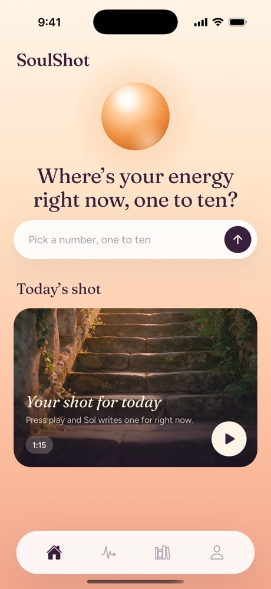
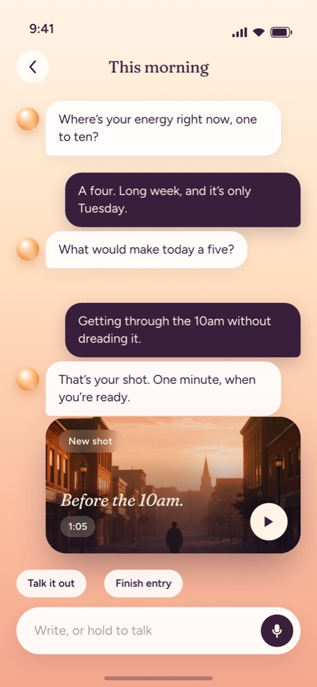
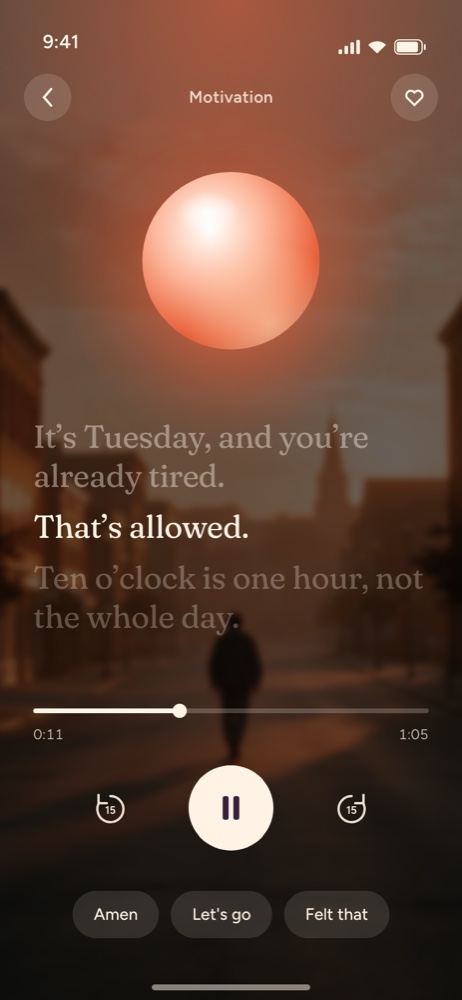
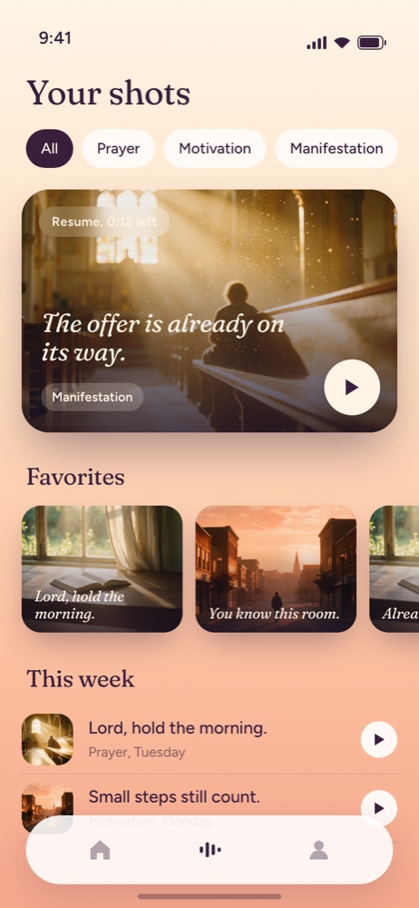

Prayer
After a Long Day
Listen to this if you need to unwind after a tough day.
Every morning, SoulShot makes you a one-minute spoken shot: a prayer, a push, or a picture of where you are going. It is written for you, read in a voice you chose, and waiting when you wake up. Press play, and start the day lifted.
$5.99 a week. Cancel any time.

Pick the kind of lift you want, and change it whenever you like.
Listen to this if you need to unwind after a tough day.
Listen to this if you need a push to fight for your goals.
Listen to this if you need a nudge to start small steps.
No forms, no journaling homework. SoulShot asks you one small question, like where your energy is on a scale of one to ten. Whatever you answer, in your own words, is what your shot is written from.

Where’s your energy right now? What would make today a little better? Type it, or hold the button and say it. A sentence is enough.

Your shot is written from what you said and read aloud in the voice you picked, over quiet music, with the words on screen as they are spoken.

A notification brings the first line. The widget plays it from your home screen. Every shot stays in your library, and the ones that landed get a heart.
It’s Tuesday, and you’re already tired.
That’s allowed.
Ten o’clock is one hour, not the whole day.
A motivation shot, from one answer: “Getting through the 10am without dreading it.”The app never demands anything. Answer the question when you feel like it. On the days you don’t, the shot still arrives.
Choose when a shot should reach you: before the commute, after the kids are down, whenever. The notification carries the first line, so you know what is waiting.
Missed a day, or a week? You are met with a shot, not a lecture. There is no guilt anywhere in this app.
The person you mentioned, the date that matters, the thing you are worried about. You can see everything it keeps, and delete any of it, under Profile.
Every shot costs a writer and a voice, so there is no free tier. Billed through your Apple ID. Cancel any time in your iPhone’s settings and keep access until the week ends.
Download on the App StoreNo. SoulShot asks a question and writes you a minute of encouragement from your answer. It is not medical, psychological, financial or legal advice. If something you write suggests you may be in danger, the app shows support resources instead of a reply.
Never. A prayer shot is written in your own voice, addressed to God as you understand God. It does not claim to know God’s will, and you can tell the app your tradition so the words fit.
AI writes and voices them, from your own answers, with rules about what a shot may and may not say. A shot can still miss the point; tap thumbs-down and the next one learns from it.
It is used for one thing: to write your shots. Entries are stored encrypted and only your account can read them. We do not sell your information or use it for ads. The Privacy Policy lists every company that touches it and why.
In your iPhone’s Settings: tap your name, then Subscriptions, then SoulShot. Cancel at least 24 hours before the week ends to avoid the next charge. You keep access until then.
Profile, then Delete account. It removes every entry, every shot and its audio, and everything the app remembered. It cannot be undone, and it does not cancel your subscription, so cancel first.
Yes. Tap Share in the player and you get a link anyone can open in a browser, no app needed. Only that one shot is on the link.